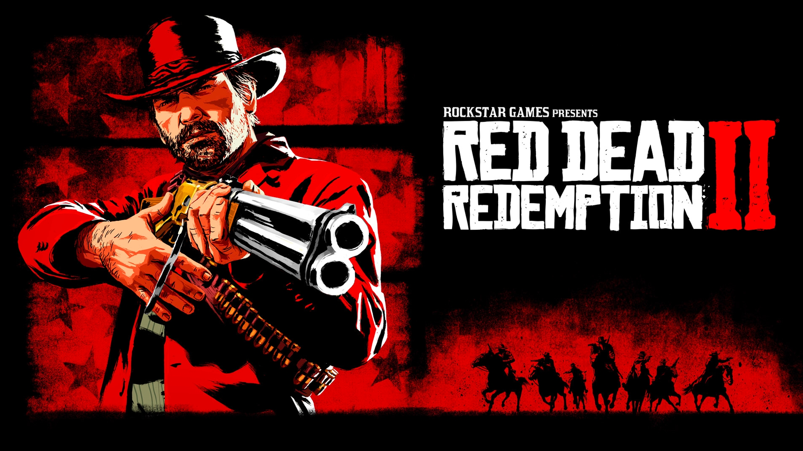

Catàleg de Jocs:
| Imatge | Títol | Plataforma | Resum |
|---|---|---|---|
 |
Minecraft | Mojang Studios | Videojuego de construcción y supervivencia en un mundo de bloques. |
 |
Red Dead Redemption I | Rockstar Games | Juego de acción-aventura ambientado en el Oeste americano y mexicano. |
|  | Red Dead Redemption II | Rockstar games | Secuela de Red Dead Redemption, con una historia más profunda y un mundo abierto expansivo. |